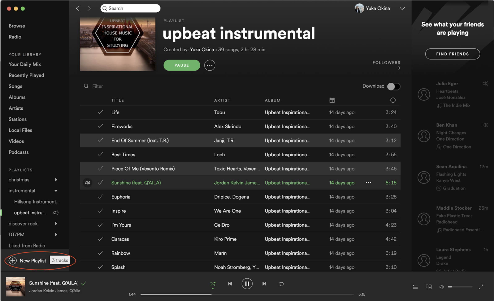
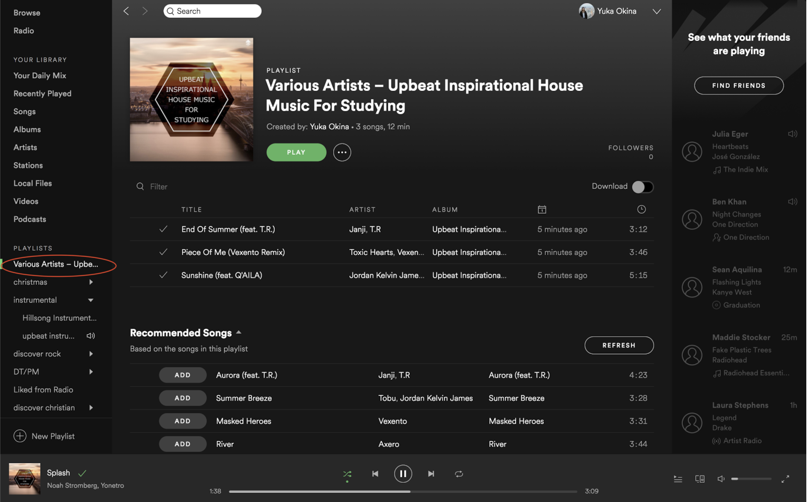

Summary
Managing and organizing music is one of, if not the most, frustrating and time-consuming aspects of music platforms. So, I worked with a team of interaction and graphic designers to learn about how users currently manage their music and how this action differs across popular music platforms such as Spotify and Youtube. From the insights we gleamed, we redesigned a new app that prioritizes playlist management. One of our distinguishing features is the ability to dislike a song in a playlist which archives that song and prevents it from no longer playing. However, users can retrieve a list of disliekd songs for each individual playlist and easily add it back to the playlist if desired.
Skills & Tools
- User Research
- Competitive Analysis
- Wireframing
- Heuristic Evaluations
- Figma
User Research
We interviewed 9 people to learn about how they manage their music and what they liked or disliked about different music platforms. From the 3 people I interviewed, the main insight I gained is that people often like to create and select playlists on moods or tasks. For example, a Computer Science major said that she often doesn’t enjoy coding so she listens to upbeat music to improve her mood.
Usability Testing on Existing Platforms
As a team, we created 10 tasks and we selected 1-3 tasks for the 9 users we interviewed that were relevant to how they usually manage playlists. From the 4 users that I observed, I learned that Spotify has many features that users are unaware of because they involve dragging and Spotify doesn’t provide any hints that this function is possible.
For example, 3 out of the 4 people I observed added songs to a playlist one by one because they didn’t know you can select and drag multiple songs at one. In the image below, one user left-clicked songs one by one in order to add to a playlist.

Another insight I gleamed is that songs in playlists are usually ordered from date added. Users would get tired of the songs toward the top of the list or feel that the mood/type of those songs are no longer relevant to that playlist. However, they still wanted to keep older songs because they brought back past memories and would listen to them occasionally.
In the image below one user said, “The first 20 songs I’m already very familiar with and I get really bored of. But, I don’t want to delete them because I still like them. I’m tired of “Summer” but I know I like “Keep it Mello” so I’ll start it from there.
Competitive Analysis
We also conducted 9 tasks ourselves that related to creating playlists, managing playlists, and discovering new songs. For each task, we compared 1 platform with a good workflow and 1 with a bad workflow. The platforms we used include Spotify, Youtube, SoundCloud, Apple Music, and PI Music Player.
One of the tasks I conducted was to I select multiple songs from an old playlist to add to a new one. I performed this task on Spotify and Apple music and found that Apple Music offered a better workflow for this task as explained in the images below.
Discoverability is not very good on Spotify because there was no indication that I could drag songs from one playlist to the “New Playlist” button.
Additionally, there was no feedback or confirmation to let me know that a new playlist was successfully created and was auto-named very vaguely based on the original playlist the songs came from.
Apple music offered a better user experience for this task because it was more intuitive and efficient. I could press command to select multiple songs and command+click to pull up an option menu which are functions that are supported by most platforms for Mac. I really like how Apple Music immediately redirects you to the new playlist and highlights the name of it which alerts me to rename it.


Wireframes
Our team decided to brainstorm wireframes for two different tasks. The first it to create a Playlist for your upcoming family Christmas Party filled with Christmas Classics. The second is to manage your “Girls Pop” Playlist by removing songs you don’t like anymore. By combining good features of existing music platforms with my own ideas, I created the wireframes below.


Redesign Decisions
After looking over each other’s individual wireframes, this is the final wirefame we decided upon as a team:


These are some of the main design decisions we made:
- Pressing “dislike” to archive a song in a seperate list within each playlist (Distinguishing Feature)
- Using library as the home page
- 3 button navigation bar with browse encompassing radio, genre, and mood
- Replacing navigation bar and back button with cancel button
- Naming a playlist after selecting songs to add to a new one
One of the main distinguishing features of our app is the separate “Dislike” section in a user’s self-made playlist that acts like an archive to store songs they currently don't want to listen to. The idea came from a lot of users we interviewed stating that they usually skip songs in their current playlist that are overplayed, not fit for the mood, or just not appealing to them, but do not want to remove from the playlist. Users can also revisit those songs and restore them back into the playlist if desired by pressing the "like" button.


The first design decision we had to face was what the home page should consist of. We debated between having a home page like Spotify where it had recommendations and recently played (similar to a website home landing page) or go straight to the library. In the end, we decided to have our library as the home page because based off of our user interviews, we found that most the time people opened up an music platform to listen to their own music.

We included "Radio" in the Browse tab as opposed to giving it a separate icon in the navigation bar as Spotify and iTunes does. Our team found it difficult to distinguish and agree upon the features that would fall under each tab so we thought users would also be confused. Therefore, we decided to put "Radio" under "Browse", which is the general section for discovering music. This follows the “consistency and standards” heuristic. Additionally, this is the same reason we put Genre and Moods together instead of separating them as Spotify does since we were debating whether “Holiday” fell under “Genre” or “Moods”.

The cancel button replaces the navigation bar and the back button is removed whenever the user is in the middle of a task or function. This reminds users they are in the middle of a task and prevents users from accidentally quitting the task or function by hitting the navigation bar. The cancel button also returns the user to where they were before they started the task rather than clicking on a back arrow multiple times to return to where they started.
When creating a new playlist, we decided that the user should name the new playlist on the same page as the list of other playlists in order to accelerate the process for creating a new playlist especially since it’s a subtask to the overarching task of adding songs to a playlist.This also helps the user remember the names of the other playlists to prevent the user from naming the new playlist something too similar to an existing playlist resulting in confusion. This meets the “error prevention” and “flexibility and efficiency of use” heuristic.
In the future, we would like to conduct further research and user testing to determine the order of items on the home page, browse page, and playlist menu. We would like to order the items based on how often the user clicks on the different items with the item that’s used the most often at the top of the list.
Final Redesign Mock Up
We created mock ups of two tasks to demonstrate the concept of our app. I contributed to the mock up of task 1.
Task 1: Create a Playlist for your upcoming family Christmas Party filled with Christmas Classics

Task 2: Manage your “Girls Pop” Playlist by removing songs you don’t like anymore